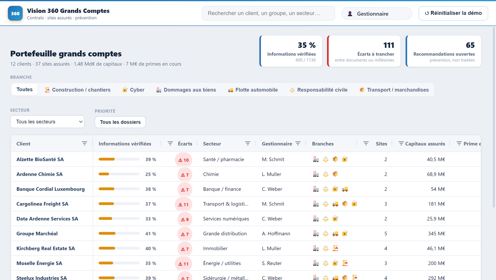
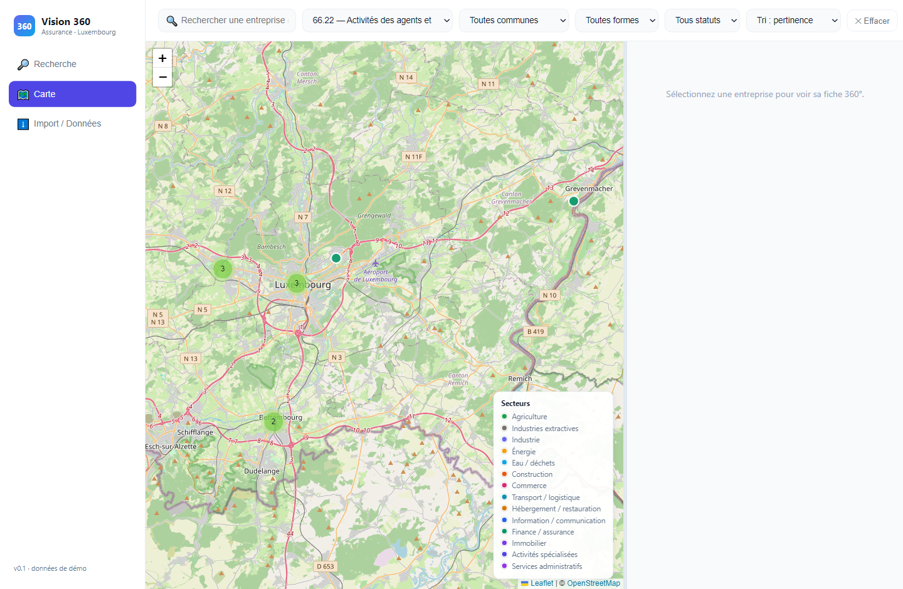
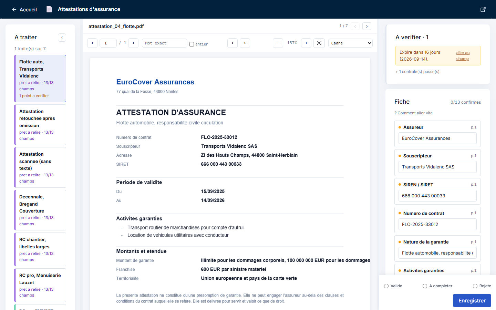
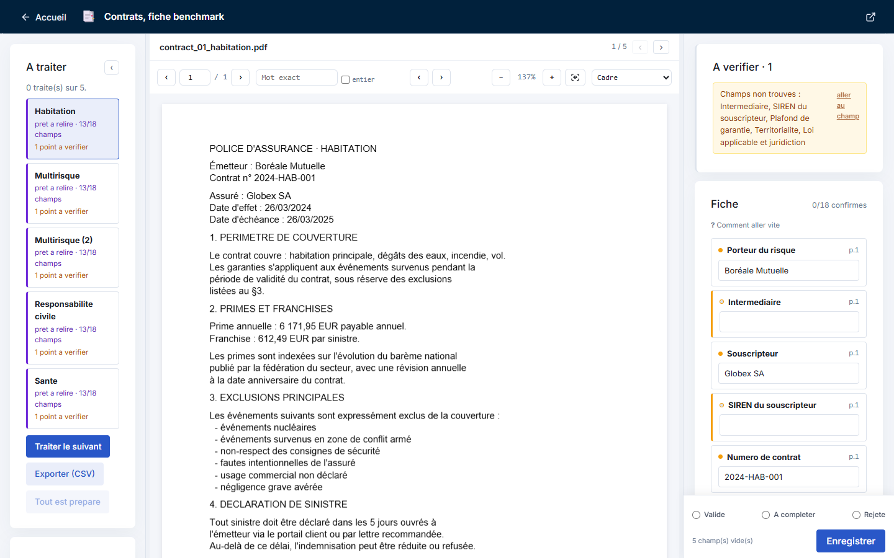

Je connais mon métier, je sais ce que l'IA sait faire : je peux prototyper en demandant à l'IA de programmer pour moi. Ici, les gestes du module 03 s'enchaînent dans un processus complet, de la demande du client à la décision.
Les réponses des exercices sont fermées par un code, donné par le formateur.
Un processus long ne se choisit pas au hasard. Le parcours du client donne la carte, et c'est une boucle : à chaque moment, du texte et des documents arrivent, quelqu'un les lit, et c'est là que se logent les cas d'usage.
Le même parcours se lit d'une autre façon, et les deux sont vraies : la roue est la vue du client, celle-ci est la vue de celui qui organise le travail. Les cas les plus rentables se logent aux passages de main, là où un dossier change de service.
Les trente et un cas de la roue tiennent en une ligne chacun, ce qui suffit à choisir mais pas à cadrer. En voici trois dépliés : ce sont les plus demandés, et ils montrent trois façons différentes de composer les briques.
Un RAG sur les conditions générales : parser, comprendre la question, chercher, générer une réponse sourcée. Le cas le plus demandé.
Ingestion, extraction (OCR), classification, routage. Le couple gagnant : l'IA générative lit, le ML classique classe. Filet humain sur les cas incertains, explicabilité obligatoire.
Exemple public : Melusine, open source, classe des dizaines de milliers de mails par jour chez un assureur mutualiste.
Deux volets : le scoring sur données structurées, et la lecture des pièces (montants, dates, tampons, incohérences) et des photos (métadonnées GPS, comparaison avec la photo du début de contrat, vue satellite pour un dommage préexistant). L'IA priorise, la décision reste humaine.
Le seuil de faux positifs est un choix métier, pas technique. L'essentiel des détections vient de règles co-construites avec les gestionnaires. Et on n'explique jamais au fraudeur ce qu'on contrôle : on redemande une autre photo, sans dire pourquoi.
Un score de résiliation avec ses facteurs explicatifs, une action de rétention, et la mesure contre un groupe témoin. Une prochaine meilleure action ordonnée par valeur, sans critère discriminant, traçable. Aucune IA générative dans ces deux cas : ce sont des modèles sur données structurées, vus au module 02.
Un texte libre (« nos artisans depuis 1990 pour vos installations sanitaire… ») doit devenir un code d'activité. Trois niveaux de maturité : des mots-clés (explicable, mais liste jamais complète), des mots-clés enrichis par des milliers de cas observés, puis un modèle qui généralise aux cas inédits. Toujours montrer pourquoi : un client peut être multi-activité, et une activité incohérente est un signal de fraude.
Commencer par le faible enjeu et le fort volume : la fin de la ressaisie (lire et structurer les pièces), les tableaux de bord, avant la souscription et les sinistres. Et se souvenir que dans un portefeuille réel, ce qui rend le plus de service n'est souvent pas génératif : de l'IA classique sur des données structurées, déclenchée par un événement.
Pour chaque dossier de souscription, vous avez besoin de l'activité, de l'adresse et de la situation légale de l'entreprise. Vous recevez son extrait d'immatriculation en PDF. Projet d'extraction par IA, ou autre chose ?
Autre chose : l'information existe déjà dans une base officielle, à jour, interrogeable par numéro d'entreprise, gratuite ou de l'ordre de mille euros par an. Un projet d'extraction pour la même information coûte parfois un million, et lit un document qui peut être faux ou périmé. Le réflexe de cadrage : chercher la source avant l'outil. L'extraction garde tout son intérêt pour ce qui n'existe dans aucune base : le constat, la facture, le relevé d'information.
Prenez n'importe quel cas de la carte. Une phrase à un assistant, quelques minutes, et il en sort un outil qui marche. La souscription sert de démonstration, les autres prototypes montrent que le geste ne lui est pas réservé. Ce qui manque pour que ce soit le vôtre vient juste après.
Le prompt, tel quel, et le résultat, tel quel. Aucune retouche.
Chacun de ces prototypes est parti d'une phrase, sur un autre endroit de la carte. Ce sont des exemples, pas une liste fermée : la vision du portefeuille, la lecture d'attestations et de contrats, le lecteur documentaire, le contrôle d'une facture.




Une facture de garage, comme en reçoit un service sinistres. Le prototype de fraude documentaire ne « détecte pas la fraude » : il applique des contrôles nommés, total cohérent avec les lignes, SIRET existant, artisan identique au devis, tampon plausible, et produit un dossier scoré avec les motifs et la zone du document. Un gestionnaire tranche derrière, avec de quoi motiver sa décision.
La démonstration de la section 9 montre le même geste sur une photo de reçu : les indices, puis un verdict motivé.
Chercher une réponse dans un corpus de documents est un geste du module 03, générique et testable seul. Ce qui appartient à ce module, c'est de le poser dans un processus réel, avec des écrans, des équipes et une décision au bout.
La réponse sourcée arrive dans l'outil du conseiller, pendant l'appel, avec la page des conditions générales à l'appui.
L'outil écoute l'échange et remonte la clause au bon moment, sans que le conseiller ait à chercher.
À réception d'une pièce, la garantie est vérifiée contre les conditions générales, et l'alerte qui remonte est motivée.
Le site marche du premier coup. Cliquez dedans et cherchez ce qui cloche, avant de déplier.
Le site marche du premier coup : offres, devis en quatre étapes, tarif, confirmation, FAQ. C'est la puissance de l'IA agentique, une demande, un logiciel. Mais regardez-le : c'est le site que tout le monde obtiendrait avec le même prompt. Moyen, presque au sens statistique : la moyenne de tout ce que le modèle a vu. Le tarif est une formule sortie de nulle part, les garanties sont génériques, rien ne vient de votre métier. C'est exactement le Snake de la formation : le jeu tourne en une demande, mais pour un bon jeu, un jeu différenciant, il faut ajouter des obstacles, des pouvoirs spécifiques, un rythme. Ici pareil. Le prompt donne le début ; le métier donne le reste.
Pourquoi une phrase a suffi : des sites de souscription et des Snake, il en existe des milliers en ligne. Plus il y a d'exemples, moins il faut de prompt ; un jeu inédit demanderait un cahier des charges complet. Et « moyen » est déjà beaucoup : face à des sites de vingt ans jamais revus, l'IA relève tout le monde d'un cran, les mauvais deviennent moyens, les moyens très bons. Mais une capacité n'est pas un produit.
Le prototype d'une phrase est un point de départ, pas un livrable : le tarif est inventé, le formulaire ne lit rien, et le concurrent obtient le même. Ce qu'on ajoute ensuite est ce qui vous appartient. La souscription sert d'exemple, et la même règle, l'IA lit, le code décide, l'humain valide, revient dans tous les prototypes.
Des coefficients plausibles, aucun des vôtres. Indéfendable devant un client ou un contrôleur.
Le client doit se plier aux cases. Rien ne lit ce qu'il écrit vraiment.
Tout est rempli, tout est plausible, rien n'est vérifié. Le bonus tapé à 0,80 est pris pour vrai.
Même structure, même vocabulaire, mêmes témoignages inventés. Aucune différence.
Marques, usages, zones, exclusions : ce que le modèle générique ne sait pas.
Chaque ligne justifiable. L'IA ne calcule pas le prix, le code le fait.
Le client écrit comme il parle ; la brique IA lit ; les champs manquants sont signalés, jamais inventés.
Relevé d'information, sinistres déclarés, validation du gestionnaire sur ce qui est incertain.
Le site en un prompt s'adressait au client. Celui-ci s'adresse au gestionnaire, et c'est déjà une différence : un écran de travail, pas une vitrine. Il a lui aussi été produit avec un assistant de code, mais à partir d'un cahier des charges métier. Les quatre pouvoirs spécifiques y sont tous visibles : le dictionnaire maison, les règles de tarif numérotées, la demande lue en langage libre, les contrôles qui décident de la suite. Une seule étape appelle un modèle, la lecture de la demande. Corrigez un champ de la fiche : le prix, les règles et la décision se refont sous vos yeux.
C'est le modèle de tous les prototypes de ce module : l'IA lit ce qui est écrit en langage humain, le code fait le reste, et l'humain valide avant l'envoi.
Un prompt d'une phrase, un site qui marche : c'est vrai pour la souscription, et c'est vrai pour des objets bien plus gros. Voici ce qu'un après-midi sort, en version cliquable, sur des processus que vous connaissez.
Pas un script : un poste de travail, avec les files par équipe, les statuts, la reprise d'un dossier commencé par un collègue, l'historique.
Produit par produit : habitation, santé, responsabilité civile professionnelle. Celui du dessus n'en est qu'un.
La pièce reçue, les contrôles passés un par un, l'alerte motivée, et la trace de ce qui a été vérifié.
Lecture de la pièce, comparaison poste par poste avec le devis, écarts surlignés, validation.
Les vraies questions des assurés, des réponses tirées de vos documents avec le passage cité, et le passage à un conseiller quand la réponse n'y est pas.
Le prototype tient dans une demi-journée. Ce qui suit est un projet, et il ne ressemble à celui d'aucune autre compagnie.
La grille de tarif, les exclusions, les pièces exigées, les seuils au-delà desquels un humain regarde.
Où elles sont, dans quel état, qui a le droit de les voir. C'est presque toujours le point qui coince.
Qui traite quoi, dans quel ordre, et ce qui se passe quand quelqu'un s'est trompé la veille.
Ce qui part sans relecture, ce qui passe par un humain, et ce qu'il faut pouvoir montrer six mois plus tard.
Prototyper est facile, et c'est la bonne nouvelle : vous pouvez montrer un écran à votre direction cette semaine. Le rendre vôtre est le vrai travail, et personne d'autre que vous ne peut le faire.
Écrivez le prompt d'une phrase pour un parcours de souscription de votre branche (habitation, santé, RC pro), générez, et cliquez dedans. Puis listez les quatre pouvoirs spécifiques que vous ajouteriez : votre dictionnaire, vos règles de tarif, la demande en langage libre, vos contrôles. Une heure suffit pour le premier temps ; le second est le vrai travail.
Le site généré est propre et complet, et il ressemble à celui du voisin. Les quatre pouvoirs sont toujours les mêmes de nom, jamais de contenu : c'est votre liste d'exclusions, votre grille de tarif, vos pièces exigées. C'est là que se joue la différence, et rien de cela ne sort d'un prompt d'une phrase.
Cinq écrans, une seule façon de faire dessous. Deux motifs reviennent dans chaque prototype, l'architecture en trois couches et la marche d'exposition où l'outil s'arrête. Et tous préparent la même chose : un seul assistant qui route vers des briques typées.
Cinq écrans différents, et la même construction dessous. Deux motifs reviennent dans chaque prototype : l'architecture en trois couches, qui décide où vit la logique métier, et la marche d'exposition à laquelle l'outil s'arrête, qui décide de la robustesse exigée.
Le même outil, montré à quatre publics différents, n'est pas le même produit. D'une marche à l'autre, ce qui change, c'est la robustesse exigée.
Quelques personnes qui savent ce qu'elles regardent, sur leurs propres dossiers. Une réponse fausse n'a aucune conséquence, elle est repérée et notée. C'est la marche où l'on apprend, et elle coûte presque rien.
La faute classique est de vouloir la sauter, parce qu'un outil interne « ne se montre pas ». C'est pourtant là qu'on découvre ce que le métier attend vraiment.
Des collègues l'utilisent sur leur travail réel, toute la journée. L'erreur reste acceptable, à condition d'être visible et corrigeable en un geste. D'où la sortie structurée, les sources citées, le score de confiance.
C'est ici que la revue par exception commence à payer. Si le gestionnaire doit tout relire, le gain disparaît et l'outil est abandonné en trois semaines.
L'assuré parle de son contrat, donc deux choses deviennent interdites : sortir du périmètre, et répondre avec les données de quelqu'un d'autre. Les droits se filtrent avant l'appel au modèle, jamais après.
Une réponse fausse ne coûte plus du temps, elle devient un engagement que le client vous opposera. Le refus propre et l'escalade vers un humain ne sont plus des options.
N'importe qui, y compris quelqu'un qui cherche la faille pour la capture d'écran. C'est la marche la plus exigeante, et celle où l'on met une marque en jeu, pas seulement un outil.
Elle demande des tests adverses, des garde-fous, et un périmètre étroit assumé. La question à se poser avant de la monter n'est pas « est-ce que ça marche », mais « qu'est-ce qui se passe le jour où quelqu'un essaie de le faire dérailler ».
Une trentaine de petits outils rangés en six verbes suffisent à couvrir un service : questionner un document, extraire, comparer, transformer, contrôler, et les outils pour développeurs. Chacun a une vue utilisateur et une vue « voir le détail » qui montre le pipeline.
Le gain s'évapore si l'utilisateur doit « décrocher » pour vérifier. Voir OK ou KO sans changer d'onglet, ne relire que ce que le score de confiance signale : c'est ce qui fait qu'un outil est adopté.
Pris un par un, ces prototypes sont des outils. Mis bout à bout, ils préparent autre chose : un seul assistant qui reconnaît l'intention du client et lance le bon workflow. La fiche 360 vue en tête de section est le contexte que cet assistant partage entre toutes les étapes. Mais un assureur qui veut « un chatbot » a aujourd'hui deux options symétriques, et également mauvaises. La troisième est celle que tous les prototypes ci-dessus appliquent.
On branche un modèle en direct sur le site. L'utilisateur tape « donne-moi un code », le bot répond n'importe quoi, sans source, sans garantie. Rapide à mettre en place, impossible à défendre.
Le chatbot scripté classique : rigide, qui ne comprend rien hors de son arbre de décision. Prévisible, mais il casse à la première formulation imprévue.
Un assistant qui détecte l'intention, route vers le bon workflow, et justifie ses réponses contre un document officiel. Ni le prompt nu, ni l'arbre figé.
question sur un document, réponse justifiée à la ligne. Lecture seule.
remplir un formulaire ou produire un document : l'attestation, la déclaration.
document → champs typés avec leur source : KBIS, constat, facture. Le verbe le plus fréquent.
détecte l'intention et route vers le bon workflow. Le noyau du chatbot unifié.
vérifie la sortie d'une IA contre le document. La parade à l'hallucination.
La gestion documentaire classique stocke et retrouve des documents. La nouvelle génération ingère tout, documents et mails, et en fait un contexte typé et interrogeable, rattaché au client. C'est ce contexte qui ancre chaque chatbot du parcours, et qui alimente la fiche 360 vue plus haut.
Deux entrées transversales pour la suite : la voix (transcrire un appel ou un échange en agence et faire remonter les bons éléments du contrat) et le local (un modèle qui tourne sur place quand la donnée ne doit pas sortir).
Un prospect artisan arrive sur le site et veut une responsabilité civile professionnelle. Décrivez l'outil en trois écrans : (1) la conversation qui recueille l'activité en langage libre et la classe (le fil rouge de la carte, section 1) ; (2) la fiche pré-remplie que le prospect corrige, avec les pièces demandées ; (3) l'écran du gestionnaire qui reçoit le dossier, avec les champs à vérifier. Pour chaque écran, dites quel archétype il combine (réponse, action, extraction, dispatcher, validation) et listez les briques : quelle règle, quel dictionnaire, quel appel au modèle, quelle sortie structurée. Puis demandez à un assistant de code de générer l'écran 1. Une demi-journée suffit pour un premier prototype.
Écran 1, la conversation : un dispatcher (recueillir l'activité, la reformuler, la classer dans la nomenclature) plus une extraction (activité, chiffre d'affaires, effectif, SIRET). Briques : un appel au modèle avec la liste des activités en contexte, une sortie JSON à quatre champs, un dictionnaire des activités pour rattraper les libellés proches, une règle qui refuse les activités hors périmètre.
Écran 2, la fiche : une action (produire la fiche pré-remplie et la liste des pièces), sans appel au modèle pour l'essentiel. Briques : un gabarit, des règles (pièces exigées par activité, SIRET à quatorze chiffres, cohérence entre effectif et chiffre d'affaires), et le modèle seulement pour reformuler ce que le prospect corrige en texte libre.
Écran 3, le gestionnaire : une validation, le second avis. Briques : une extraction sur les pièces reçues (le KBIS contre la fiche), une règle qui surligne chaque écart, et une confiance par champ qui décide ce qui est vérifié à la main. Aucun écran ne repose sur l'IA seule : le modèle lit et classe, les règles décident.
Les mêmes motifs, déclinés sur d'autres gestes du métier. Chaque lien ouvre un cas complet : ce qu'on cherchait, la méthode, et la démonstration cliquable sur des documents publics ou synthétiques.
Le catalogue complet, filtrable par technique et par métier.
Prototyper, c'est faire écrire le code par l'IA. Deux familles d'outils le permettent : l'assistant de code, fait pour les développeurs mais utilisable par un métier qui sait ce qu'il veut, et les outils pour non-informaticiens, qui agissent sur vos fichiers et vos applications avec une validation avant chaque action. Avant les noms, un point de théorie qui explique pourquoi ça marche aussi bien.
Le moteur seul ne sait pas compter les « r » de strawberry (module 01). Il écrit pourtant sans faute le programme qui les compte, et bien plus. Pourquoi, à votre avis ?
Un langage de programmation est un texte très structuré, avec une grammaire stricte et des millions d'exemples publics commentés. C'est exactement ce qu'un modèle de langue apprend le mieux. Même chose pour un poème : la métrique est une structure, il la respecte ; les blagues, subtiles, lui ont longtemps résisté. Plus la sortie est structurée, plus il est fiable. Résultat : le développement est le premier métier transformé, avec des assistants comme Claude Code qui lisent un projet entier, modifient, testent, corrigent.
Ce que cela donne pour vous n'est pas une application informatique de plus, c'est un écran métier obtenu en une demande. La section 2 en montre un qui tourne dans la page, un parcours de souscription auto en trois écrans : le client écrit sa demande en français, l'IA la lit, le tarif sort de règles explicites. La vitesse d'itération est le vrai changement, une minute par version, et vous restez le juge du résultat.
Décrit en français, affiné avec l'assistant qui pose les bonnes questions.
Un formulaire, une page, générés et corrigés à la vue.
Chez l'IT ou chez un hébergeur : un quart d'heure, avec un fichier de configuration lui aussi généré.
Le même assistant écrit les tests, les fait tourner, et corrige ce qui casse.
Un assistant de code, c'est une petite équipe : on sort un logiciel seul. Et le code ancien (COBOL, VBA) se lit et se documente en français, puis se convertit.
Ça marche bien : erreurs courantes, petites fonctions cadrées, tests unitaires, migrations classiques. Ça coince : bibliothèques trop récentes, bugs liés au contexte global, cohérence d'un gros projet, sécurité, architecture.
Un prompt = une fonction. Un prompt bien découpé donne un code bien découpé.
Tester chaque résultat intermédiaire. Générer 10 000 lignes en deux minutes, c'est créer deux ans de dette.
Exemples du projet, conventions, fichiers existants.
L'IA voit le code d'un document PowerPoint ou Excel, pas son rendu : c'est fiable et pas cher. Faire cliquer un agent sur des captures d'écran, ce qu'on appelle le computer use, est lent, cher et fragile : à réserver au logiciel qui n'a aucune autre porte d'entrée.
Ce que l'assistant de code fait pour un développeur, une nouvelle génération d'outils le fait pour un utilisateur métier : lire un dossier, remplir un tableau, préparer un courrier, comparer deux documents, avec des compétences bornées et une validation avant chaque action. Le marché bouge vite ; voici les noms à connaître.
| Outil | Ce qu'il fait | Modèle | Pour qui |
|---|---|---|---|
| Claude Cowork | L'équivalent de Claude Code pour un utilisateur métier : agit sur les fichiers et les applications, demande validation | Éditeur | Métier, bureautique |
| goose | Agent open source qui exécute des tâches avec des outils branchés (protocole MCP) | Open source | Métier outillé, équipes techniques |
| AnythingLLM | Chat documentaire local : on dépose ses fichiers, on interroge, sans rien envoyer à l'extérieur | Open source | Documents sensibles |
| Manus, OpenCode, GenOffice | Agents généralistes ou spécialisés bureautique, à des stades de maturité variés | Mixte | Veille |
| Copilot, Gemini Workspace | L'assistant intégré à la suite bureautique, avec les droits d'accès de l'entreprise | Éditeur | Tous, sous licence |
La fenêtre de conversation n'est pas la bonne interface pour tout. Le bon outil épouse le geste du métier :
une vue côte à côte, différences surlignées.
une file de tri, avec les cas incertains à valider.
un dossier scoré, avec les motifs et la zone du document.
le chat, et seulement lui, avec les sources citées.
Le principe fondateur de ces outils : l'agent ne dit pas « exécuter send_email », il dit « je vais envoyer ce courrier au client Durand, tu valides ? ». Chaque action est reformulée dans les mots du métier, et l'humain garde la main.
Le critère de choix n'est pas la puissance du modèle, c'est le degré de contrôle : demander, proposer un plan, agir seul. La section 8 y revient.
Choisissez une tâche répétitive de votre semaine (un reporting, une relance, un tri de pièces). Décrivez-la à un assistant comme vous la décririez à un nouveau collègue : ce qui entre, ce qui sort, ce qu'il faut vérifier. Notez ce que l'assistant demande en retour : ce sont les informations qu'un outil devrait connaître. C'est le point de départ d'un skill, section suivante.
Presque toujours les mêmes quatre choses : d'où viennent les données (le fichier, le mail, l'outil), à quoi doit ressembler la sortie (un tableau, un mail, un statut), ce qui arrive dans les cas limites (une pièce manquante, un montant hors norme), et qui valide à la fin. Ces quatre réponses sont les rubriques du skill de la section suivante. Si vous ne savez pas répondre à l'une d'elles, l'outil ne le saura pas non plus.
Tout prototype n'a pas besoin d'un écran. Un skill, c'est une fiche de mode d'emploi : comment on fait cette tâche ici, écrit une fois, que l'agent relit chaque fois que la tâche se présente. Pas d'écran, pas de projet informatique. Vous écrivez ce qu'un nouveau collègue devrait savoir, et vous le gardez.
Une fiche tient en une page. Celle-ci existe dans un service sinistres, elle sert plusieurs fois par jour.
Une seule opération : classer un mail, lire un constat, comparer deux garanties, traduire une clause. Il se teste seul, sur vingt cas.
Il en enchaîne plusieurs et gère les cas de sortie : instruire une déclaration de sinistre, monter un dossier de souscription. Il dit aussi quand s'arrêter et passer la main.
Commencez toujours par le premier. Un skill de processus fait de skills mal testés produit des erreurs qu'on ne sait plus attribuer.
Un outil = une fonction avec un nom, une description et des paramètres. Le développeur expose un catalogue ; le modèle lit l'intention et choisit la fonction à appeler, avec les bons arguments. C'est exactement ce que fait « utilise Python » au module 01, généralisé.
Avec un millier d'outils, envoyer toute la liste à chaque demande ne marche plus : on pré-sélectionne les outils pertinents avant d'appeler le modèle. C'est une recherche, comme pour les documents.
Avec une sortie structurée : on impose un schéma JSON, et le modèle devient un composant logiciel fiable (un montant est un nombre, une date est une date).
Pour comparer, chercher, regrouper. Calculés une fois, stockés, comparés pour presque rien.
Tout le reste (RAG, extraction, comparaison, agents) est de l'assemblage de ces deux appels avec du code classique autour.
Prenez la tâche notée à la section 5. Écrivez le prompt qui la fait, avec un exemple d'entrée et le format de sortie attendu (un JSON de trois ou quatre champs). Testez-le sur cinq cas réels anonymisés. Notez les deux vérifications que vous faites toujours à la main : ce sont les lignes de code déterministe à ajouter. Vous avez un skill.
La première porte sur la forme : un champ vide, une date impossible, un montant qui n'est pas un nombre, un identifiant à la mauvaise longueur. La seconde porte sur le métier : un montant au-dessus d'un seuil, une date antérieure à la souscription, une pièce qui ne correspond pas au type de dossier. Aucune des deux n'a besoin d'un modèle : ce sont des lignes de code déterministe, elles tournent après l'appel au modèle et arrêtent le dossier avant qu'il parte. C'est là que se gagne la fiabilité, pas dans le prompt.
Le module 03 a déroulé les techniques pour classer un mail. Ici on en fait un outil que des gestionnaires utilisent tous les matins. Trois choses à concevoir : l'écran, la règle de décision par famille, et ce qu'on mesure avant de laisser l'outil agir seul.
Pas un chat : une file de tri. À gauche les mails, au centre le mail ouvert avec ses mots reconnus surlignés, à droite la famille proposée, la confiance, et deux boutons : valider, corriger. Les mails sûrs partent seuls ; l'écran ne montre que ceux qui méritent un regard. C'est l'UX par exception.
En une demi-journée avec un assistant de code : le dictionnaire dans un fichier, la file dans une page, les corrections dans une table. La démonstration du module 03 en est le squelette.
sur un échantillon relu à la main. Certaines familles sont faciles, d'autres non ; un chiffre global cache tout.
s'il dépasse ce que le service absorbe, on baisse le seuil sur les familles peu risquées, ou on améliore le dictionnaire.
un service qui pensait recevoir 6 000 mails par an en comptait 33 000. Mesurer d'abord, c'est souvent la première surprise du projet.
pourquoi le modèle s'est trompé, produit par l'équipe technique ; le métier dit ensuite lesquelles traiter en priorité.
Le seuil est un choix du service, famille par famille. Les chiffres se fixent sur l'historique, avec plusieurs scénarios : pour chaque seuil, un taux d'automatisation et un taux d'erreur.
| Famille | Criticité d'une erreur | Seuil | Action si le modèle est sûr |
|---|---|---|---|
| Changement d'adresse | Faible, format fixe | Bas | Traitement automatique |
| Demande d'attestation | Faible | Bas | Réponse automatique |
| Sinistre | Élevée : un délai coûte | Haut | Routage seulement, réponse humaine |
| Plusieurs clients ou agents | Très élevée | Hors modèle | Toujours manuel |
le changement d'adresse : gros volume, format fixe, erreur bénigne.
la demande de certificat de janvier, quand tout le monde écrit en même temps.
chacune entraînée puis automatisée séparément, jamais un basculement d'ensemble.
de l'arrivée du mail à l'action déclenchée : personne ne l'avait, chaque équipe documentait sa partie.
Prenez vingt mails réels anonymisés de votre service. Listez les familles, puis pour chacune les cinq mots ou expressions qui la trahissent, et la criticité d'une erreur. Classez les vingt mails avec cette liste, à la main : combien sont sans ambiguïté ? Ceux qui restent sont exactement les cas pour lesquels un modèle se justifie. Vous avez le cadrage, le dictionnaire de départ, l'échantillon de test et la table des seuils.
Avec une bonne liste de mots, la majorité des mails se classe sans hésiter. Ceux qui restent sont toujours les mêmes : un mail qui parle de deux familles, un mail vague (« j'ai un problème avec mon contrat »), un mail dont l'objet ne correspond pas au corps. C'est sur ceux-là seulement qu'un modèle apporte quelque chose, et c'est sur ceux-là qu'on mesure. La criticité notée par famille donne directement la table des seuils : automatique quand l'erreur coûte peu, relecture humaine quand elle coûte cher.
Ce que les prototypes de ce module ont en commun. Le point de départ n'est pas la technique, c'est le processus : qui fait quoi, avec quelles données, quelle décision à la fin. Et l'écran d'abord : un métier ne réagit pas à une spécification, il réagit à un écran.
Trois jours de prototype contre trois mois de projet : on peut dire non sans drame, et on découvre les vrais besoins en regardant les gens l'utiliser.
Traduire un geste métier en écran. L'IA écrit le code ; vous portez l'intention et la vérification.
Un prototype qui devient la production sans passer par les spécialistes est le piège classique. Il sert à prouver la valeur et à cadrer.
Les experts de vingt ans savent, mais n'ont jamais écrit. L'écran fait parler : « non, là il manque le cas où… ».
Quelle décision, quel gain, pour qui.
L'organisation des données préfigure la moitié du projet.
Comment je ferais à la main ? Chaque étape devient une brique.
Un écran, des données réelles anonymisées, des retours.
Taux de réussite, temps gagné, taux de revue humaine.
Sécurité, données personnelles, intégration.
Par l'équipe qui saura la maintenir.
Avec ses indicateurs, sa boucle de retour, sa revue.
Un magasin de petits outils indépendants d'abord, puis l'IA dans le processus existant là où un outil a prouvé sa valeur, puis une application unifiée, un module par cas d'usage. Le générique (l'assistant de tous) et le spécifique (l'outil du métier) ne s'excluent pas : on garde les deux.
Deux équipes, le même besoin : un moteur de recherche sur les documents du service. La première déploie le framework RAG standard, avec tous ses composants. La seconde se demande « comment je ferais à la main ? » et code exactement cela. Qui livre, et en combien de temps ?
La première : dix mois, 3 000 lignes de code, puis le projet est abandonné. La seconde : un jour, moins de cent lignes, et l'outil tourne. Ce n'est pas une question de talent : le framework résout des problèmes que le service n'a pas, et cache ceux qu'il a. La troisième étape de la méthode, « comment je ferais à la main ? », est là pour ça. La technique la plus simple qui marche, d'abord.
Des règles si-alors. Fiable, traçable, aveugle au non-structuré.
Le même squelette, avec des briques de lecture aux bons endroits. C'est le prototype de souscription de la section 2.
Le développeur expose des outils, le modèle choisit lequel appeler. Le point d'équilibre aujourd'hui.
On donne un objectif, il planifie et corrige. À manier avec un humain qui valide, section 9.
Un prototype prouve la valeur et cadre le projet. Il ne protège pas les données, ne respecte pas seul les normes, ne tient pas la charge, ne se maintient pas. Ces sujets restent un métier de spécialiste. Voici ce qu'il faut savoir pour dialoguer avec eux et passer la main proprement.
Un modèle est un fichier de nombres qui transforme du texte en texte : inerte. Le danger apparaît quand sa sortie est exécutée automatiquement avec de mauvais droits. C'est là que frappe l'injection de prompt vue au module 03 : un texte lu par l'agent lui dicte une action, et si rien ne borne ses droits, il l'exécute. D'où le critère central de tout déploiement : le degré de contrôle, du plus prudent au plus dangereux.
L'humain valide tout.
L'humain valide le plan, l'agent exécute.
L'agent enchaîne sans validation.
Aucune limite. Ce mode existe dans les outils, il ne doit pas exister chez vous.
Une clé par projet, journalisation de chaque appel, budget plafonné, revue trimestrielle.
Pour toute réponse : quel document, quel passage, quel modèle, quel prompt. Sans ça, pas d'audit possible.
Donnée confidentielle → modèle ouvert sur une machine dédiée (chez vous ou dans un cloud souverain). Donnée non confidentielle → API du marché, en région européenne, sans réentraînement.
Détection de secrets dans le code, inventaire des dépendances, analyse de vulnérabilités, environnements de test avant production.
| Le cadre | Ce qu'il impose à un outil IA | Ce que ça change dans le prototype |
|---|---|---|
| RGPD | Minimisation, finalité, droit d'accès ; pas de donnée personnelle vers un modèle externe sans base légale | Anonymiser avant l'appel, avec une cascade déterministe auditable (module 02) |
| AI Act | Classification par niveau de risque ; transparence ; supervision humaine pour les usages à risque | Documenter l'usage, garder l'humain dans la décision qui affecte un assuré |
| Droit à l'explication | Un assuré peut demander pourquoi une décision le concernant a été prise | Toujours montrer les motifs et la source, jamais un score seul |
| DORA, résilience | Continuité, dépendance aux fournisseurs, réversibilité | Pouvoir changer de modèle sans réécrire l'outil : les trois couches |
Porte le besoin, le processus, les critères d'acceptation. C'est vous, après cette formation : celui qui prototype et cadre.
Choisissent les briques, mesurent, industrialisent le package. Ils reprennent votre prototype, ils ne repartent pas de zéro s'il respecte les trois couches.
Fournissent le contenant : hébergement, accès, passerelle, conformité. Les impliquer tôt, avec un écran à montrer, change tout.
Le bon moment pour passer la main est le moment où le prototype a prouvé quelque chose : un taux d'extraction, un temps gagné, un besoin confirmé par ceux qui l'ont utilisé. Vous arrivez alors avec un écran, des mesures, des cas réels et une liste de ce qui reste à faire. C'est le cadrage dont les spécialistes ont besoin, et c'est ce qui fait qu'un projet passe du POC à la production.
La question tombe toujours à la fin : le prototype est là, qui le met en service, et en combien de temps ? Voici la frise que suit une équipe d'industrialisation. Elle n'est pas à connaître par cœur, elle sert à situer votre prototype dedans, et à savoir ce qu'on vous demandera.
Cadrer un projet, choisir un niveau d'usage, piloter une équipe qui travaille avec l'IA : c'est le sujet du parcours voisin, IA générative pour l'actuariat, écrit pour ceux qui pilotent. Il commence par le cadrage et le pilotage, et il porte une bibliothèque de vingt-deux cas actuariels détaillés.
Du premier prompt au prototype, un fil : l'IA générative au service du besoin métier, jamais en boîte noire.
Le LLM prédit du texte, il ne sait pas et ne calcule pas. Sa fiabilité vient de sa combinaison avec des outils déterministes. Bien prompter, c'est cadrer.
Des mots-clés aux Transformers, chaque rupture lève une limite sans remplacer la précédente. Le LLM n'est pas toujours nécessaire ; le dictionnaire du métier sait des choses que le générique ignore.
Classer, lire, comparer, chercher, interroger. L'IA à trois endroits : pour réfléchir, pour créer l'outil, dans l'outil ou pas. Le document est l'entrée de presque tout.
La carte des cas d'usage pour choisir, un prompt pour voir ce que l'IA sort déjà sur plein de cas, puis le peaufinage, qui est la vraie part de travail. Des skills quand une interface n'est pas nécessaire, un outil en trois couches quand elle l'est. Puis passer la main aux spécialistes, avec des mesures. La sécurité se règle autour du modèle, pas dedans.
La question qui décompose une tâche en briques, et qui révèle celles qui n'ont pas besoin d'IA.
Regex, dictionnaire, ML classique, embeddings, puis seulement le LLM. Monter quand ça plafonne.
Pas de chiffre sans page, pas de décision sans motif. Ce qui n'est pas traçable n'est pas déployable.
Un taux, un temps, un groupe témoin. Le mode « agir seul » se mérite.
Sur la décision qui touche un assuré, sur l'action irréversible, sur le seuil de faux positifs. C'est un choix métier.
Le tableur a démocratisé le calcul sans faire de tout le monde un comptable. Même mouvement ici : ce n'est pas un métier de plus, c'est un outil que chacun apprend à tenir.
Ni l'outil ni la technique : le temps d'expérimenter, l'habitude de vérifier, le courage de prototyper. Commencez cette semaine.